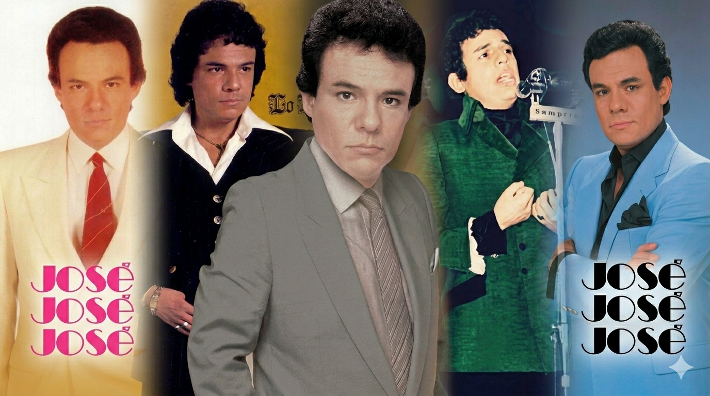

Bienvenidos a este espacio dedicado a la leyenda de José Rómulo Sosa Ortiz, conocido universalmente como José José. Nacido en el seno de una familia de músicos, creció con el talento corriendo por sus venas, heredando la disciplina de su madre pianista y la potencia de su padre tenor. Hoy lo celebramos como el máximo exponente de la balada romántica y un pilar indiscutible de la identidad musical latinoamericana.
El mundo lo bautizó como "El Príncipe de la Canción", un título que describe no solo su éxito en ventas, sino la nobleza y elegancia de una voz única y privilegiada. Su capacidad para interpretar el sentimiento humano lo convirtió en un referente absoluto, poseedor de una técnica vocal y una sensibilidad que le permitieron trascender épocas y modas.
Esta plataforma rinde tributo a un artista que fue mucho más que un ídolo; se transformó en un "compañero de vida" y un "amigo íntimo" para millones de seguidores. A través de sus canciones, José José supo ponerle palabras al amor y al desamor, acompañando a las personas en sus vivencias más personales y convirtiéndose en el confidente de todo un continente.
Su impacto global fue de tal magnitud que su música rompió la barrera del idioma, llegando a ser aclamado en países de habla no hispana y logrando cifras de ventas que superan los 100 millones de copias. Esa trayectoria llena de momentos inolvidables y una entrega total sobre los escenarios es la que define su estatus como una leyenda viva de la música popular.
Te invitamos a explorar la historia de este hombre que buscó unificar a las personas a través de su arte y que hoy sigue vigente en el gusto de las nuevas generaciones. José José es, y seguirá siendo, un ícono inmortal cuyo legado resuena con la misma fuerza y pasión de siempre. Bienvenido al sitio oficial dedicado a la voz que le cantó al alma: el Príncipe.